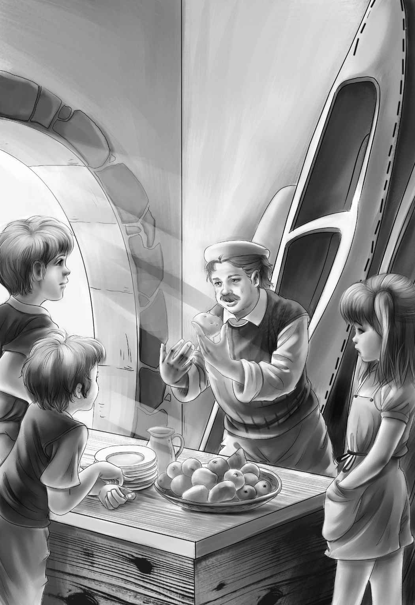

Starting for Camp
前往缅因州的旅途很舒适。他们在路上吃了午饭。午饭后不久，大乔开车驶上了一条颠簸不平的小路，小心谨慎地在林地里穿行。突然，他指着路边一处美丽的湛蓝色湖面说：“旅行车就只能开到这里了！”
孩子们欣赏着窗外的美景，大乔把车开到一家小商店门前停了下来，大声喊道：“全都下车吧！”
“游戏正式开始啦！”爱丽丝兴奋地喊着，“瞧，我们要在这儿买多少东西啊！”
商店的老板走了出来，查看是谁家的车停在门口。
“您不记得我了吧，龙先生！”大乔说，“我在这儿当过导游。”
“当然记得，你不是大乔·奥登嘛？见到你真高兴。要乘独木舟旅行吗？这几个都是你的孩子吗？”
“不，不！”大乔笑着说，“这是我新婚的妻子，这几个是我的侄子侄女。”
“您好！”班尼礼貌地问候着，“哇，龙先生，我看到您的独木舟了。”
“独木舟和旅行的全套装备，我这里应有尽有。”龙先生笑着说，“每只船上坐三个人吗？我来安排好啦！你们需要两艘独木舟，还有几顶帐篷。”
大家走进商店。“哇，瞧！”班尼开心地喊道，“各式各样的铁盘子和铁罐子！我们早饭就吃煎饼吧！”说着他便拿下一盒做煎饼用的面粉。
“班尼，”杰西温和地说，“要买什么得听大乔的，他知道我们该带什么。”
“没错，杰西，”大乔说，“不过，班尼说对了，我们是要吃煎饼。你们就等着一大早闻煎饼的香味吧！”
龙先生把东西都放到一个大口袋里。“面粉、盐、糖、火腿、蛋粉、罐装奶、土豆、黄豆、洋葱、水果罐头……”爱丽丝逐个清点着，“带上这些我们就不会挨饿了。”

“还有吃饭和做饭用的铁盘子。”杰西说。
他们来到商店外面看独木舟。
“我可以帮你们保管旅行车，”龙先生说，“车停在这里就好了。”他把两艘独木舟翻转过来，帮着大乔把它们推了一半到湖中。
大乔道了声谢：“还有件事儿，龙先生，我们问完再走。其实我们来这里，是要找一位失踪的老人。他现在大概七十多岁，已经失踪将近40年了。”
“他叫比尔·麦格雷戈。”班尼补充道。
“真遗憾，我从没听说过这个人。”龙先生摇了摇头。
“好可惜！”维莉失望地说。
龙先生看着这个文静的小女孩。“我会好好留意的，”他又说，“如果听到关于他的任何消息，我就告诉你们。”
“那就麻烦您了。”大乔说，“大家准备出发吧！”
“我要和大乔坐一艘独木舟！”班尼又蹦又跳地喊着。
“嗯，可以，”大乔迟疑了片刻，答应了，“正好你轻，我重。亨利，我把杰西也带上，你就带着维莉和爱丽丝吧！”
“太好了！”爱丽丝朝维莉笑了笑，“我喜欢跟你在一起。如果需要，我还能帮亨利划船呢。”
“我把装食品的袋子、帐篷袋和行李卷放到独木舟的中间，”大乔说，“班尼，你坐到这些东西旁边，别乱动啊！”
“亨利的独木舟里放另外几个行李卷和那几个装盘子的袋子。”
一切准备就绪后，龙先生用力将独木舟推到了湖里。
“哇，可爱极了！”独木舟在湛蓝的湖水中荡漾，杰西兴奋地喊道，“多美的湖啊！”她回头看去，发现亨利正在使劲划着桨。很快，两艘独木舟就并排向前进发了。
“亨利，靠近点儿！”大乔扭头喊道，“这样我们就能听见彼此说话了。”
班尼正在看着湖里的一个点。“水很深吗，大乔？”他问道。
“是的，非常深。”
“深得能栽下一棵树吗？”班尼仍然看着湖中心的那个点。
“可以，湖中心的深度比一棵树要高得多。”大乔笑着说，“为什么问这个？”
“哦，湖里长着一棵树呢！你看，在那儿，就在湖中心，”班尼喊道，“可是它在动！”
“一棵树在动？”大乔惊讶地说，“什么啊，那是只驼鹿！它在游泳呢！那些‘树枝’是它的角，班尼。喂——亨利！快看！有只驼鹿！”大乔指着驼鹿冲亨利喊着。
驼鹿似乎听到了他们的喊叫声，看到独木舟后连忙转过身，快速游向岸边。一到岸边，它就啪嗒啪嗒地踩着浅水，很快便消失在灌木丛里。
“真好！真好！”杰西说，“坐着独木舟旅行，总能遇到有趣的事情。当然，这还算不上大惊喜。”
“留点儿神，”大乔说，“说不定你们还能见到黑熊呢！”
“真的吗，大乔？”杰西问。
“真的，不过不是在这儿。”大乔答道，“黑熊通常不会在这儿出没，但是我们回家前可能会遇到黑熊。”
“快看，有鱼！”杰西兴奋地喊道，“看见那条鱼了吗？刚刚跳出水面了！”
“看见了，”大乔说，“好大一条！”
“我们钓鱼吧！”班尼高兴地喊。
“现在还不能停船，”大乔说，“我们得一直划下去，赶在天黑之前到达营地。”
“我们要在营地里生篝火吗，大乔？”
大乔微笑着说：“当然要！我当过导游，知道怎么生篝火。在缅因州的森林里，只有导游才可以生火。”
“有你这个导游真好！”班尼说，“对了，咱们晚饭吃什么？”
“暂时保密。”大乔说，“还有，到时候可能会有个朋友加入我们的晚餐。呃——不是可能，是肯定会有。”
“到底是谁？”杰西问，“不会是比尔吧？”
“不，怎么会是比尔呢。”大乔赶紧说。
杰西这时才想起来，大乔和龙先生在商店前面低声交谈过，谁也没有听到他们说了什么。
“这个也要保密，对吧？”班尼说。
“没错！”大乔答道。